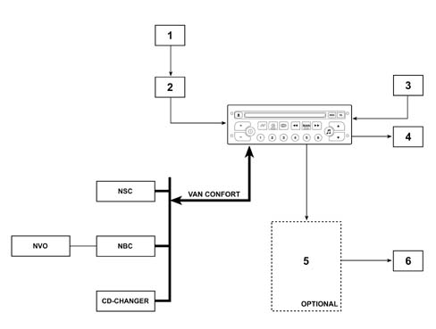
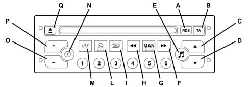
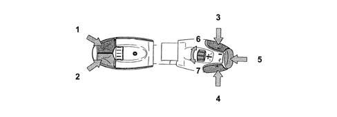
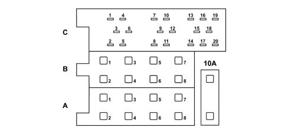

ACOUSTIC SYSTEM RADIO
- Path
- Descriptions > 55 ELECTRICAL EQUIPMENT > 5505 INSTRUMENT/GAUGE ELECTRICAL CIRCUITS > 5505A MULTI-FUNCTION COMPONENTS > ACOUSTIC SYSTEM RADIO
- Kind
- system description
- Applies to
- all engines; all production periods
- Interactive page
- https://sloeber94.github.io/elrnDB-fUlss/en/#/179000419
Applies to: all engines; all production periods
STANDARD RADIO
General specifications
When the Connect is not required, a radio with mono CD and a multifunction monochromatic display located at the centre of the vehicle, under the instrument panel, is fitted on the vehicle as standard.
The radio is connected to the multifunction screen (NSC) which displays the relevant information and is connected to a remote control on the steering wheel with an audio input for a CD Changer.
The specifications of the radio are:
- automatic switching off 30 minutes after the radio has been switched on,
- variation in the volume depending on the speed (this function can be inhibited by the user),
- TA (Traffic Announcements): with the volume of the announcement irrespective of the source activated,
- REG: allows the choice of listening to the same programme on several radios organized in networks e.g.: RAI)
- Mute: with the telephone connected to the vehicle it is possible to deactivate all radio functions when an incoming call is received.
- PTY: search for a particular type of station;
- anti-theft protection through code system, requested each time it is switched on after the battery has been disconnected with the engine switched off,
Operating diagram
The structure of the radio connections is illustrated in the diagram below

- 1 - Aerial (on the third row left side window)
- 2 - Aerial adapator
- 3 - Aux input
- 4 - Speakers (in configuration without amplifier)
- 5 - Hi - Fi amplifier (optional)
- 6 - Speakers (in configuration with amplifier)
Radio controls
The controls are located on the radio front panel (shown in the diagram) and several are duplicated on the right steering column switch unit satellite
Radio controls on the front panel

- A - RDS functions on/off (if pressed for more than two seconds, the system moves to the frequency update mode according to the zone)
- B - On / Off priority for road traffic information
- C,D - Audio mode adjustment
- E - Adjustment of bass, treble, loudness, sound distribution and automatic volume correction.
- F - Higher frequency automatic search. Selection of next CD track
- G - Manual / automatic operation of F and H buttons in radio mode
- H - Lower frequency automatic search. Selection of previous CD track
- I - CD CHANGER selection
- L - CD mode selection
- M - Radio source selection. Selection of FM1, FM2, Fmast, AM frequency (pressing for more than 2 seconds: automatic programming of stations (autostore)
- N - Radio on/off
- O, P - Volume adjustment
- Q - CD eject
- 1 to 6 - Selection of stations programmed. (if the button is pressed for more than 2 seconds the station is programmed)
Radio controls on the steering column switch unit

- 1 - Increasing station search mode
- 2 - Decreasing station search mode
- 3 - Volume +
- 4 - Volume -
- 3+4 - No volume (mute)
- 5 - End control button: Mode/Telephone
- 6 - Programmed stations search ring nut
Radio module switching on/off
IGNITION
When the radio is switched off, the following is carried out:
- simply pressing the ON button on the front panel of the radio; this operation is followed by the activation of the NSC (multifunction screen node).
- through an activation request for the NSC (for example, moving to the ignition ON positon)
Operating procedure
When the radio is on, there are two possible operating mode:
- Activated: all the audio sources are available and the user controls are activated
- Inactive: the radio is capable of exchanging information on the VAN, but it is inactive from the point of view of the user.
SWITCHING OFF
When the radio is on, the deactivation causes:
- Simply pressing the OFF button on the radio front panel;
- through an NSC request (radio switching off control)
- through an interruption of the +VAN signal (or the power supply)
- through closing the diagnostic session if the radio was switched off at the start of the session as soon as the radio detects (fault confirmed) the absence of the NSC (data signal interruption and data B).
Radio functions
The table below contains the radio functions shown on the display (102.5 x 29.5 mm)
Radio section (tuner) |
Search for station treble and base |
Memory number |
List of 6 memories for the band selected with the memory selected at the moment of the recall highlighted |
Memory band |
Manual or automatic search |
Memory writing or reading |
PTY: general listening mode selection (31 codes) |
AF: alternative frequency RDS mode |
TA: automatic traffic information |
Local or Distant: tuner reception setting |
Reg: regional reception |
EON: station which is part of a network |
Autostore: memorizes the first 6 stations met |
Program Service Name: Name of the RDS operating station |
Station frequency |
Mono CD and CD Changer section |
reading or pause indicator (under the mute function) |
CD source indicator |
track number |
number of discs (for the CD Changer) |
reading times |
random reproduction |
CD and CD Changer functions:
track forwards or backwards on the same disc |
forwards or backwards on a track played |
Scan |
Audio functions:
Loudness |
Mute |
Source |
Balance |
Fader |
Bass |
Treble |
volume |
automatic volume variation |
System technical specifications
Radio specifications
- power 4 x 30 W
- RDS
- TA
- 4 tuning bands FM1, FM2, AM
- 24 programmable stations (18 FM and 6 AM)
- manual or automatic search
- 6 station AUTOSTORE on AST level
- Regional mode
- PTY
- motorized loading or ejection of CD
Aerial
The radio aerial, made up of three vertical wires and one horizontal one, is discretely located in the left window for the third row.
CD CHANGER
The CD Changer module, on left hand drive vehicles, is located in the oddments compartment on the passenger side and is easily accessible and has compartments that other CDs can be stored in.
The radio can operate a CD Changer (6 CDs) and has the following functions:
- Random reproduction (discs or tracks)
- Scan (scanning of tracks on the CD for 10 seconds)
- Interruption following Traffic Info (PTY) or Mute (Telephone)
System component location
There are two types of system - the standard system and the Hi-Fi sound system
General specifications of the standard system:
- Dashboard: Tweeters (one on each side 55 mm in diameter), located at the edges of the dashboard
- Front doors: Woofers (one on each side 165 mm in diameter) installed in the lower part of the door panels
- Third row door panels: Woofers (one on each side 165 mm), located in the lower part
- Rear pillar: Tweeter (one on each side 55 mm diameter) located at waist level on the rear pillar
General specifications of the HI-FI sound system
The system has been carefully designed by the JBL company to guarantee optimum acoustic performance for each individual seat.
The system consists of an 8 It bass-reflex 165 mm subwoofer (under the passenger seat) and a (4 x 60 W) dedicated amplifier (under the driver's seat) and a Woofer and Tweeter system located as follows:
- Dashboard: tweeters (one per side) (55 mm diameter) JBL HI-FI class located at the edges of the dashboard
- Front doors: woofers (one on each side) (165 mm in diameter) JBL HI-FI class, installed in the lower part of the door panels
- Third row door panels: woofers (one on each side) (165 mm in diameter) JBL Hi-Fi class, installed in the lower part of the door panels
- Rear pillar: tweeters (one per side) (55 mm diameter) "dome type", JBL HI-FI class, positioned at waist height in the rear pillar
Operation
Anti-theft system
The radio assigned to the vehicle is the one fitted in the factory. It cannot therefore work on another vehicle. If there is an attempt to install the radio on another vehicle, it will move to a mode where it will not be operational for the entire time until it is set up again.
If the radio is removed and refitting on the original vehicle, it will start to work again normally the next time it is set up.
Interference mode
The anti-theft function is carried out through a VIN code test. The operating principle consists of superimposing a repetitive beep on the sound which is sufficiently annoying to the user.
The interference mode functions by simply switching the radio on when it is not unlocked by the VIN code.
The radio VIN code
To implement the anti-theft protection, the radio memorizes the last 8 characters of the VIN code. The radio VIN code is programmed into the radio by means of a session during the configuration in the factory. The code can be reprogrammed using the diagnostic equipment.
Sound level adjustments
In addition to the manual adjustment of the volume, the volume can be adjusted automatically
The radio makes automatic changes to the volume in the following cases:
- Setting up of the radio
- The sound volume is memorized when the radio stops. If the volume is higher than 20, the next time the module is switched on again the value memorized for the volume will be gradually restored to a value of 20.
- Automatic correction of the volume based on the speed: if the user activates the automatic volume correction (VOLUME AUTO = ON) using the audio menu (adjustment carried out via the NSC), the sound volume increases or decreases depending on the speed of the vehicle.
RDS functions
The RDS function is activated and deactivated by pressing the RDS button briefly.
When the RDS function is activated, the change from one frequency to another for the station being listened to is automatic based on a local radio decision.
Regional mode (REG)
The regional is activated or deactivated by pressing the RDS button for more than 2 seconds in FM mode when the RDS function has been selected. In this case, the equipment selects the best frequency from those broadcasters transmitting the same station. This option facilitates listening to one programme.
The function is applied to all stations on the same network. Listening can change from one programme to another.
TA functions
Traffic news (TA)
The request for traffic news can be activated or deactivated using the TA button. Pressing this button briefly tells the radio system to search for and tune into the stations (enabled for this service) which are broadcasting traffic bulletins. The traffic news replaces the source being listened to (except in the case of a phonecall or parking assistance or other similar communications).
During a traffic news bulletin, the CD stops and pressing the TA button briefly or changing the audio source interrupts the bulletin.
If the radio was in the mute condition, the NSC cancels the mute function. When the TA bulletin is finished, the mute function is cancelled and the previous source is returned ot.
PTY mode (Type of programme)
When the equipment is in the tuner source mode and FM band, pressing the TA button for a while activates the PTY mode.
This function allows the type of programme to be selected, a change to a station broadcasting the PTY programme selected or a search throughout the entire the FM band for a station broadcasting a particular type of programme.
The table below contains a list of available PTY programmes
4 | Sport |
5 | Educational |
6 | Drama |
7 | Culture |
8 | Science |
J9 | Miscellaneous |
IO | Pop Music |
11 | Rock Music |
12 | Varied Music |
13 | Light Music |
14 | Classical Music |
15 | Other Music |
31 | Alert |
When the PTY selection mode is activated the screen will display the last type of programme selected. It is also possible to memorize the type of programme selected by pressing one of the numbered buttons (1-6) for a while and recalling it by pressing the appropriate button briefly.
Radio PIN OUT
The radio pin out is illustrated in the diagram.

Connector A
Pin | Function |
|---|---|
1 | Mute signal |
2 | VAN Data |
3 | VAN Data B |
4 | + VAN |
5 | + 12 v switched (output) |
6 | Not connected |
7 | Power supply (+30) |
8 | Earth |
Connector B
Pin | Function (non HiFi versions) |
|---|---|
1 | + HP ARD |
2 | - HP ARD |
3 | + HP AVD |
4 | - HP AVD |
5 | + HP AVG |
6 | - HP AVG |
7 | + HP ARG |
8 | - HP ARG |
Connector C
Pin | Function |
|---|---|
1 | not connected |
2 | not connected |
3 | not connected |
4 | not connected |
5 | not connected |
6 | not connected |
7 | Audio input + / left voice synthesis |
8 | Audio input - / left voice synthesis |
9 | Audio input + / right voice synthesis |
10 | Audio input - / right voice synthesis |
11 | Audio input + / auxiliary |
12 | Audio input - / auxiliary |
13 | Van data |
14 | Van datab |
15 | CD Changer earth |
16 | CD Changer +30 bat |
17 | + Van |
18 | CD Changer audio earth |
19 | CD Changer left audio |
20 | CD Changer right audio |